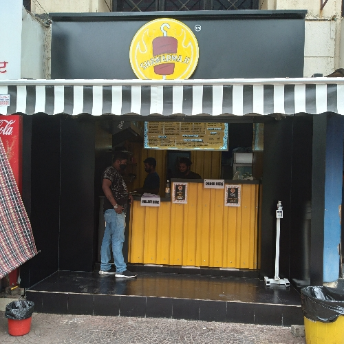
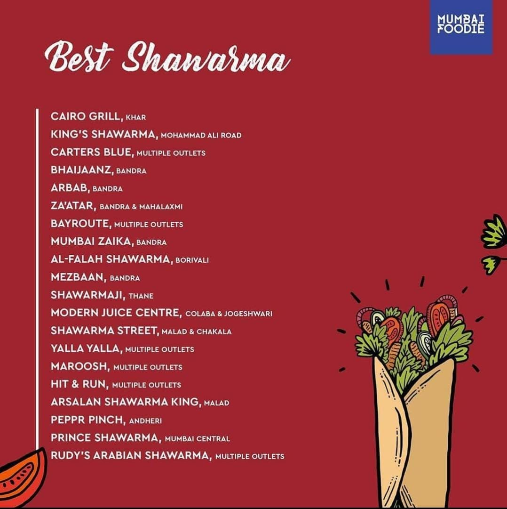

SHAWARMAJI
WE SERVE BEST SHAWARMA'S IN THE TOWN.
Shawarmaji's Shawarma
Shawarmaji was established in 2019 by Pritish, Amey and Rajas in the form of a foodtruck
envisioning an expansive spread in the food industry. It began with a simple idea and desire
to set a mark on the shawarma foodline, making it the most fulfilling serve one may ask for!
Keeping the customary shawarma, the menu has also expanded keeping the key ingredients in place
adding a wonderful twist like salads, fusion shawarmas,open shawarmas, grillers and shawarmazza.
Today, nearly 2.5 years later, they have been able to establish five outlets with a central
kitchen ranging across Thane and Mumbai

